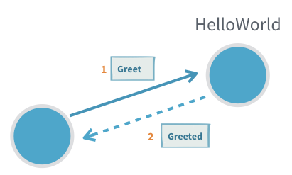
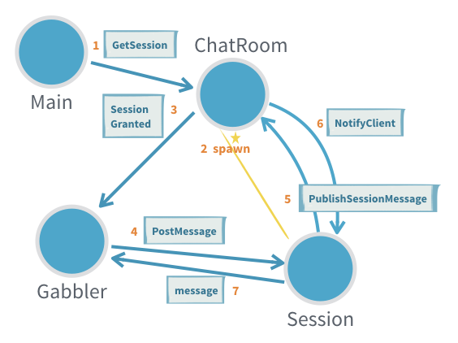

Introduction to Actors
You are viewing the documentation for the new actor APIs, to view the Akka Classic documentation, see Classic Actors.
Module info
To use Akka Actors, add the following dependency in your project:
- sbt
val AkkaVersion = "2.6.7" libraryDependencies += "com.typesafe.akka" %% "akka-actor-typed" % AkkaVersion- Maven
<properties> <akka.version>2.6.7</akka.version> <scala.binary.version>2.13</scala.binary.version> </properties> <dependency> <groupId>com.typesafe.akka</groupId> <artifactId>akka-actor-typed_${scala.binary.version}</artifactId> <version>${akka.version}</version> </dependency>- Gradle
versions += [ AkkaVersion: "2.6.7", ScalaBinary: "2.13" ] dependencies { compile group: 'com.typesafe.akka', name: "akka-actor-typed_${versions.ScalaBinary}", version: versions.AkkaVersion }
Both the Java and Scala DSLs of Akka modules are bundled in the same JAR. For a smooth development experience, when using an IDE such as Eclipse or IntelliJ, you can disable the auto-importer from suggesting javadsl imports when working in Scala, or viceversa. See IDE Tips.
| Project Info: Akka Actors (typed) | |
|---|---|
| Artifact | com.typesafe.akka
akka-actor-typed
2.6.7 |
| JDK versions | Adopt OpenJDK 8 Adopt OpenJDK 11 |
| Scala versions | 2.12.11, 2.13.1 |
| JPMS module name | akka.actor.typed |
| License | |
| Readiness level | Supported, Lightbend Subscription provides support
Since 2.6.0, 2019-11-06
|
| Home page | https://akka.io/ |
| API documentation | |
| Forums | |
| Release notes | akka.io blog |
| Issues | Github issues |
| Sources | https://github.com/akka/akka |
Akka Actors
The Actor Model provides a higher level of abstraction for writing concurrent and distributed systems. It alleviates the developer from having to deal with explicit locking and thread management, making it easier to write correct concurrent and parallel systems. Actors were defined in the 1973 paper by Carl Hewitt but have been popularized by the Erlang language, and used for example at Ericsson with great success to build highly concurrent and reliable telecom systems. The API of Akka’s Actors has borrowed some of its syntax from Erlang.
First example
If you are new to Akka you might want to start with reading the Getting Started Guide and then come back here to learn more. We also recommend watching the short introduction video to Akka actors.
It is helpful to become familiar with the foundational, external and internal ecosystem of your Actors, to see what you can leverage and customize as needed, see Actor Systems and Actor References, Paths and Addresses.
As discussed in Actor Systems Actors are about sending messages between independent units of computation, but what does that look like?
In all of the following these imports are assumed:
- Scala
-
import akka.actor.typed.scaladsl.Behaviors import akka.actor.typed.scaladsl.LoggerOps import akka.actor.typed.{ ActorRef, ActorSystem, Behavior } - Java
-
import akka.actor.typed.ActorRef; import akka.actor.typed.ActorSystem; import akka.actor.typed.Behavior; import akka.actor.typed.javadsl.AbstractBehavior; import akka.actor.typed.javadsl.ActorContext; import akka.actor.typed.javadsl.Behaviors; import akka.actor.typed.javadsl.Receive;
With these in place we can define our first Actor, and it will say hello!

- Scala
-
object HelloWorld { final case class Greet(whom: String, replyTo: ActorRef[Greeted]) final case class Greeted(whom: String, from: ActorRef[Greet]) def apply(): Behavior[Greet] = Behaviors.receive { (context, message) => context.log.info("Hello {}!", message.whom) message.replyTo ! Greeted(message.whom, context.self) Behaviors.same } } - Java
-
public class HelloWorld extends AbstractBehavior<HelloWorld.Greet> { public static final class Greet { public final String whom; public final ActorRef<Greeted> replyTo; public Greet(String whom, ActorRef<Greeted> replyTo) { this.whom = whom; this.replyTo = replyTo; } } public static final class Greeted { public final String whom; public final ActorRef<Greet> from; public Greeted(String whom, ActorRef<Greet> from) { this.whom = whom; this.from = from; } } public static Behavior<Greet> create() { return Behaviors.setup(HelloWorld::new); } private HelloWorld(ActorContext<Greet> context) { super(context); } @Override public Receive<Greet> createReceive() { return newReceiveBuilder().onMessage(Greet.class, this::onGreet).build(); } private Behavior<Greet> onGreet(Greet command) { getContext().getLog().info("Hello {}!", command.whom); command.replyTo.tell(new Greeted(command.whom, getContext().getSelf())); return this; } }
This small piece of code defines two message types, one for commanding the Actor to greet someone and one that the Actor will use to confirm that it has done so. The Greet type contains not only the information of whom to greet, it also holds an ActorRef that the sender of the message supplies so that the HelloWorld Actor can send back the confirmation message.
The behavior of the Actor is defined as the Greeter with the help of the receive behavior factory. Processing the next message then results in a new behavior that can potentially be different from this one. State is updated by returning a new behavior that holds the new immutable state. In this case we don’t need to update any state, so we return samethis, which means the next behavior is “the same as the current one”.
The type of the messages handled by this behavior is declared to be of class Greet., meaning that message argument is also typed as such. This is why we can access the whom and replyTo members without needing to use a pattern match. Typically, an actor handles more than one specific message type where all of them directly or indirectly extendimplement a common traitinterface.
On the last line we see the HelloWorld Actor send a message to another Actor, which is done using the ! operator (pronounced “bang” or “tell”)tell method. It is an asynchronous operation that doesn’t block the caller’s thread.
Since the replyTo address is declared to be of type ActorRef[Greeted]ActorRef<Greeted>, the compiler will only permit us to send messages of this type, other usage will be a compiler error.
The accepted message types of an Actor together with all reply types defines the protocol spoken by this Actor; in this case it is a simple request–reply protocol but Actors can model arbitrarily complex protocols when needed. The protocol is bundled together with the behavior that implements it in a nicely wrapped scope—the HelloWorld objectclass.
As Carl Hewitt said, one Actor is no Actor — it would be quite lonely with nobody to talk to. We need another Actor that interacts with the Greeter. Let’s make a HelloWorldBot that receives the reply from the Greeter and sends a number of additional greeting messages and collect the replies until a given max number of messages have been reached.

- Scala
-
object HelloWorldBot { def apply(max: Int): Behavior[HelloWorld.Greeted] = { bot(0, max) } private def bot(greetingCounter: Int, max: Int): Behavior[HelloWorld.Greeted] = Behaviors.receive { (context, message) => val n = greetingCounter + 1 context.log.info2("Greeting {} for {}", n, message.whom) if (n == max) { Behaviors.stopped } else { message.from ! HelloWorld.Greet(message.whom, context.self) bot(n, max) } } } - Java
-
public class HelloWorldBot extends AbstractBehavior<HelloWorld.Greeted> { public static Behavior<HelloWorld.Greeted> create(int max) { return Behaviors.setup(context -> new HelloWorldBot(context, max)); } private final int max; private int greetingCounter; private HelloWorldBot(ActorContext<HelloWorld.Greeted> context, int max) { super(context); this.max = max; } @Override public Receive<HelloWorld.Greeted> createReceive() { return newReceiveBuilder().onMessage(HelloWorld.Greeted.class, this::onGreeted).build(); } private Behavior<HelloWorld.Greeted> onGreeted(HelloWorld.Greeted message) { greetingCounter++; getContext().getLog().info("Greeting {} for {}", greetingCounter, message.whom); if (greetingCounter == max) { return Behaviors.stopped(); } else { message.from.tell(new HelloWorld.Greet(message.whom, getContext().getSelf())); return this; } } }
Note how this Actor manages the counter by changing the behavior for each Greeted reply rather than using any variables.Note how this Actor manages the counter with an instance variable. No concurrency guards such as synchronized or AtomicInteger are needed since an actor instance processes one message at a time.
A third actor spawns the Greeter and the HelloWorldBot and starts the interaction between those.
- Scala
-
object HelloWorldMain { final case class SayHello(name: String) def apply(): Behavior[SayHello] = Behaviors.setup { context => val greeter = context.spawn(HelloWorld(), "greeter") Behaviors.receiveMessage { message => val replyTo = context.spawn(HelloWorldBot(max = 3), message.name) greeter ! HelloWorld.Greet(message.name, replyTo) Behaviors.same } } } - Java
-
public class HelloWorldMain extends AbstractBehavior<HelloWorldMain.SayHello> { public static class SayHello { public final String name; public SayHello(String name) { this.name = name; } } public static Behavior<SayHello> create() { return Behaviors.setup(HelloWorldMain::new); } private final ActorRef<HelloWorld.Greet> greeter; private HelloWorldMain(ActorContext<SayHello> context) { super(context); greeter = context.spawn(HelloWorld.create(), "greeter"); } @Override public Receive<SayHello> createReceive() { return newReceiveBuilder().onMessage(SayHello.class, this::onStart).build(); } private Behavior<SayHello> onStart(SayHello command) { ActorRef<HelloWorld.Greeted> replyTo = getContext().spawn(HelloWorldBot.create(3), command.name); greeter.tell(new HelloWorld.Greet(command.name, replyTo)); return this; } }
Now we want to try out this Actor, so we must start an ActorSystem to host it:
- Scala
-
val system: ActorSystem[HelloWorldMain.SayHello] = ActorSystem(HelloWorldMain(), "hello") system ! HelloWorldMain.SayHello("World") system ! HelloWorldMain.SayHello("Akka") - Java
-
final ActorSystem<HelloWorldMain.SayHello> system = ActorSystem.create(HelloWorldMain.create(), "hello"); system.tell(new HelloWorldMain.SayHello("World")); system.tell(new HelloWorldMain.SayHello("Akka"));
We start an Actor system from the defined HelloWorldMain behavior and send two SayHello messages that will kick-off the interaction between two separate HelloWorldBot actors and the single Greeter actor.
An application normally consists of a single ActorSystem, running many actors, per JVM.
The console output may look like this:
[INFO] [03/13/2018 15:50:05.814] [hello-akka.actor.default-dispatcher-4] [akka://hello/user/greeter] Hello World!
[INFO] [03/13/2018 15:50:05.815] [hello-akka.actor.default-dispatcher-4] [akka://hello/user/greeter] Hello Akka!
[INFO] [03/13/2018 15:50:05.815] [hello-akka.actor.default-dispatcher-2] [akka://hello/user/World] Greeting 1 for World
[INFO] [03/13/2018 15:50:05.815] [hello-akka.actor.default-dispatcher-4] [akka://hello/user/Akka] Greeting 1 for Akka
[INFO] [03/13/2018 15:50:05.815] [hello-akka.actor.default-dispatcher-5] [akka://hello/user/greeter] Hello World!
[INFO] [03/13/2018 15:50:05.815] [hello-akka.actor.default-dispatcher-5] [akka://hello/user/greeter] Hello Akka!
[INFO] [03/13/2018 15:50:05.815] [hello-akka.actor.default-dispatcher-4] [akka://hello/user/World] Greeting 2 for World
[INFO] [03/13/2018 15:50:05.815] [hello-akka.actor.default-dispatcher-5] [akka://hello/user/greeter] Hello World!
[INFO] [03/13/2018 15:50:05.815] [hello-akka.actor.default-dispatcher-4] [akka://hello/user/Akka] Greeting 2 for Akka
[INFO] [03/13/2018 15:50:05.816] [hello-akka.actor.default-dispatcher-5] [akka://hello/user/greeter] Hello Akka!
[INFO] [03/13/2018 15:50:05.816] [hello-akka.actor.default-dispatcher-4] [akka://hello/user/World] Greeting 3 for World
[INFO] [03/13/2018 15:50:05.816] [hello-akka.actor.default-dispatcher-6] [akka://hello/user/Akka] Greeting 3 for Akka
You will also need to add a logging dependency to see that output when running.
Here is another example that you can edit and run in the browser:
import akka.actor.typed.scaladsl.Behaviors
import akka.actor.typed.scaladsl.LoggerOps
import akka.actor.typed.{ ActorRef, ActorSystem, Behavior }
object HelloWorld {
final case class Greet(whom: String, replyTo: ActorRef[Greeted])
final case class Greeted(whom: String, from: ActorRef[Greet])
def apply(): Behavior[Greet] = Behaviors.receive { (context, message) =>
println(s"Hello ${message.whom}!")
message.replyTo ! Greeted(message.whom, context.self)
Behaviors.same
}
}
object HelloWorldBot {
def apply(max: Int): Behavior[HelloWorld.Greeted] = {
bot(0, max)
}
private def bot(greetingCounter: Int, max: Int): Behavior[HelloWorld.Greeted] =
Behaviors.receive { (context, message) =>
val n = greetingCounter + 1
println(s"Greeting $n for ${message.whom}")
if (n == max) {
Behaviors.stopped
} else {
message.from ! HelloWorld.Greet(message.whom, context.self)
bot(n, max)
}
}
}
object HelloWorldMain {
final case class SayHello(name: String)
def apply(): Behavior[SayHello] =
Behaviors.setup { context =>
val greeter = context.spawn(HelloWorld(), "greeter")
Behaviors.receiveMessage { message =>
val replyTo = context.spawn(HelloWorldBot(max = 3), message.name)
greeter ! HelloWorld.Greet(message.name, replyTo)
Behaviors.same
}
}
def main(args: Array[String]): Unit = {
val system: ActorSystem[HelloWorldMain.SayHello] =
ActorSystem(HelloWorldMain(), "hello")
system ! HelloWorldMain.SayHello("World")
system ! HelloWorldMain.SayHello("Akka")
}
}
// This is run by ScalaFiddle
HelloWorldMain.main(Array.empty)A More Complex Example
The next example is more realistic and demonstrates some important patterns:
- Using a sealed trait and case class/objectsan interface and classes implementing that interface to represent multiple messages an actor can receive
- Handle sessions by using child actors
- Handling state by changing behavior
- Using multiple actors to represent different parts of a protocol in a type safe way

Functional Style
First we will show this example in a functional style, and then the same example is shown with an Object-oriented style. Which style you choose to use is a matter of taste and both styles can be mixed depending on which is best for a specific actor. Considerations for the choice is provided in the Style Guide.
Consider an Actor that runs a chat room: client Actors may connect by sending a message that contains their screen name and then they can post messages. The chat room Actor will disseminate all posted messages to all currently connected client Actors. The protocol definition could look like the following:
- Scala
-
sealed trait RoomCommand final case class GetSession(screenName: String, replyTo: ActorRef[SessionEvent]) extends RoomCommand sealed trait SessionEvent final case class SessionGranted(handle: ActorRef[PostMessage]) extends SessionEvent final case class SessionDenied(reason: String) extends SessionEvent final case class MessagePosted(screenName: String, message: String) extends SessionEvent trait SessionCommand final case class PostMessage(message: String) extends SessionCommand private final case class NotifyClient(message: MessagePosted) extends SessionCommand - Java
-
static interface RoomCommand {} public static final class GetSession implements RoomCommand { public final String screenName; public final ActorRef<SessionEvent> replyTo; public GetSession(String screenName, ActorRef<SessionEvent> replyTo) { this.screenName = screenName; this.replyTo = replyTo; } } interface SessionEvent {} public static final class SessionGranted implements SessionEvent { public final ActorRef<PostMessage> handle; public SessionGranted(ActorRef<PostMessage> handle) { this.handle = handle; } } public static final class SessionDenied implements SessionEvent { public final String reason; public SessionDenied(String reason) { this.reason = reason; } } public static final class MessagePosted implements SessionEvent { public final String screenName; public final String message; public MessagePosted(String screenName, String message) { this.screenName = screenName; this.message = message; } } interface SessionCommand {} public static final class PostMessage implements SessionCommand { public final String message; public PostMessage(String message) { this.message = message; } } private static final class NotifyClient implements SessionCommand { final MessagePosted message; NotifyClient(MessagePosted message) { this.message = message; } }
Initially the client Actors only get access to an ActorRef[GetSession]ActorRef<GetSession> which allows them to make the first step. Once a client’s session has been established it gets a SessionGranted message that contains a handle to unlock the next protocol step, posting messages. The PostMessage command will need to be sent to this particular address that represents the session that has been added to the chat room. The other aspect of a session is that the client has revealed its own address, via the replyTo argument, so that subsequent MessagePosted events can be sent to it.
This illustrates how Actors can express more than just the equivalent of method calls on Java objects. The declared message types and their contents describe a full protocol that can involve multiple Actors and that can evolve over multiple steps. Here’s the implementation of the chat room protocol:
- Scala
-
object ChatRoom { private final case class PublishSessionMessage(screenName: String, message: String) extends RoomCommand def apply(): Behavior[RoomCommand] = chatRoom(List.empty) private def chatRoom(sessions: List[ActorRef[SessionCommand]]): Behavior[RoomCommand] = Behaviors.receive { (context, message) => message match { case GetSession(screenName, client) => // create a child actor for further interaction with the client val ses = context.spawn( session(context.self, screenName, client), name = URLEncoder.encode(screenName, StandardCharsets.UTF_8.name)) client ! SessionGranted(ses) chatRoom(ses :: sessions) case PublishSessionMessage(screenName, message) => val notification = NotifyClient(MessagePosted(screenName, message)) sessions.foreach(_ ! notification) Behaviors.same } } private def session( room: ActorRef[PublishSessionMessage], screenName: String, client: ActorRef[SessionEvent]): Behavior[SessionCommand] = Behaviors.receiveMessage { case PostMessage(message) => // from client, publish to others via the room room ! PublishSessionMessage(screenName, message) Behaviors.same case NotifyClient(message) => // published from the room client ! message Behaviors.same } } - Java
-
public class ChatRoom { private static final class PublishSessionMessage implements RoomCommand { public final String screenName; public final String message; public PublishSessionMessage(String screenName, String message) { this.screenName = screenName; this.message = message; } } public static Behavior<RoomCommand> create() { return Behaviors.setup( ctx -> new ChatRoom(ctx).chatRoom(new ArrayList<ActorRef<SessionCommand>>())); } private final ActorContext<RoomCommand> context; private ChatRoom(ActorContext<RoomCommand> context) { this.context = context; } private Behavior<RoomCommand> chatRoom(List<ActorRef<SessionCommand>> sessions) { return Behaviors.receive(RoomCommand.class) .onMessage(GetSession.class, getSession -> onGetSession(sessions, getSession)) .onMessage(PublishSessionMessage.class, pub -> onPublishSessionMessage(sessions, pub)) .build(); } private Behavior<RoomCommand> onGetSession( List<ActorRef<SessionCommand>> sessions, GetSession getSession) throws UnsupportedEncodingException { ActorRef<SessionEvent> client = getSession.replyTo; ActorRef<SessionCommand> ses = context.spawn( Session.create(context.getSelf(), getSession.screenName, client), URLEncoder.encode(getSession.screenName, StandardCharsets.UTF_8.name())); // narrow to only expose PostMessage client.tell(new SessionGranted(ses.narrow())); List<ActorRef<SessionCommand>> newSessions = new ArrayList<>(sessions); newSessions.add(ses); return chatRoom(newSessions); } private Behavior<RoomCommand> onPublishSessionMessage( List<ActorRef<SessionCommand>> sessions, PublishSessionMessage pub) { NotifyClient notification = new NotifyClient((new MessagePosted(pub.screenName, pub.message))); sessions.forEach(s -> s.tell(notification)); return Behaviors.same(); } static class Session { static Behavior<ChatRoom.SessionCommand> create( ActorRef<RoomCommand> room, String screenName, ActorRef<SessionEvent> client) { return Behaviors.receive(ChatRoom.SessionCommand.class) .onMessage(PostMessage.class, post -> onPostMessage(room, screenName, post)) .onMessage(NotifyClient.class, notification -> onNotifyClient(client, notification)) .build(); } private static Behavior<SessionCommand> onPostMessage( ActorRef<RoomCommand> room, String screenName, PostMessage post) { // from client, publish to others via the room room.tell(new PublishSessionMessage(screenName, post.message)); return Behaviors.same(); } private static Behavior<SessionCommand> onNotifyClient( ActorRef<SessionEvent> client, NotifyClient notification) { // published from the room client.tell(notification.message); return Behaviors.same(); } } }
The state is managed by changing behavior rather than using any variables.
When a new GetSession command comes in we add that client to the list that is in the returned behavior. Then we also need to create the session’s ActorRef that will be used to post messages. In this case we want to create a very simple Actor that repackages the PostMessage command into a PublishSessionMessage command which also includes the screen name.
The behavior that we declare here can handle both subtypes of RoomCommand. GetSession has been explained already and the PublishSessionMessage commands coming from the session Actors will trigger the dissemination of the contained chat room message to all connected clients. But we do not want to give the ability to send PublishSessionMessage commands to arbitrary clients, we reserve that right to the internal session actors we create—otherwise clients could pose as completely different screen names (imagine the GetSession protocol to include authentication information to further secure this). Therefore PublishSessionMessage has private visibility and can’t be created outside the ChatRoom objectclass.
If we did not care about securing the correspondence between a session and a screen name then we could change the protocol such that PostMessage is removed and all clients just get an ActorRef[PublishSessionMessage]ActorRef<PublishSessionMessage> to send to. In this case no session actor would be needed and we could use context.selfcontext.getSelf(). The type-checks work out in that case because ActorRef[-T]ActorRef<T> is contravariant in its type parameter, meaning that we can use a ActorRef[RoomCommand]ActorRef<RoomCommand> wherever an ActorRef[PublishSessionMessage]ActorRef<PublishSessionMessage> is needed—this makes sense because the former simply speaks more languages than the latter. The opposite would be problematic, so passing an ActorRef[PublishSessionMessage]ActorRef<PublishSessionMessage> where ActorRef[RoomCommand]ActorRef<RoomCommand> is required will lead to a type error.
Trying it out
In order to see this chat room in action we need to write a client Actor that can use it:
- Scala
-
object Gabbler { import ChatRoom._ def apply(): Behavior[SessionEvent] = Behaviors.setup { context => Behaviors.receiveMessage { case SessionGranted(handle) => handle ! PostMessage("Hello World!") Behaviors.same case MessagePosted(screenName, message) => context.log.info2("message has been posted by '{}': {}", screenName, message) Behaviors.stopped } } } - Java
-
public class Gabbler { public static Behavior<ChatRoom.SessionEvent> create() { return Behaviors.setup(ctx -> new Gabbler(ctx).behavior()); } private final ActorContext<ChatRoom.SessionEvent> context; private Gabbler(ActorContext<ChatRoom.SessionEvent> context) { this.context = context; } private Behavior<ChatRoom.SessionEvent> behavior() { return Behaviors.receive(ChatRoom.SessionEvent.class) .onMessage(ChatRoom.SessionDenied.class, this::onSessionDenied) .onMessage(ChatRoom.SessionGranted.class, this::onSessionGranted) .onMessage(ChatRoom.MessagePosted.class, this::onMessagePosted) .build(); } private Behavior<ChatRoom.SessionEvent> onSessionDenied(ChatRoom.SessionDenied message) { context.getLog().info("cannot start chat room session: {}", message.reason); return Behaviors.stopped(); } private Behavior<ChatRoom.SessionEvent> onSessionGranted(ChatRoom.SessionGranted message) { message.handle.tell(new ChatRoom.PostMessage("Hello World!")); return Behaviors.same(); } private Behavior<ChatRoom.SessionEvent> onMessagePosted(ChatRoom.MessagePosted message) { context .getLog() .info("message has been posted by '{}': {}", message.screenName, message.message); return Behaviors.stopped(); } }
From this behavior we can create an Actor that will accept a chat room session, post a message, wait to see it published, and then terminate. The last step requires the ability to change behavior, we need to transition from the normal running behavior into the terminated state. This is why here we do not return same, as above, but another special value stopped.
Since SessionEvent is a sealed trait the Scala compiler will warn us if we forget to handle one of the subtypes; in this case it reminded us that alternatively to SessionGranted we may also receive a SessionDenied event.
Now to try things out we must start both a chat room and a gabbler and of course we do this inside an Actor system. Since there can be only one user guardian we could either start the chat room from the gabbler (which we don’t want—it complicates its logic) or the gabbler from the chat room (which is nonsensical) or we start both of them from a third Actor—our only sensible choice:
- Scala
-
object Main { def apply(): Behavior[NotUsed] = Behaviors.setup { context => val chatRoom = context.spawn(ChatRoom(), "chatroom") val gabblerRef = context.spawn(Gabbler(), "gabbler") context.watch(gabblerRef) chatRoom ! ChatRoom.GetSession("ol’ Gabbler", gabblerRef) Behaviors.receiveSignal { case (_, Terminated(_)) => Behaviors.stopped } } def main(args: Array[String]): Unit = { ActorSystem(Main(), "ChatRoomDemo") } } - Java
-
public class Main { public static Behavior<Void> create() { return Behaviors.setup( context -> { ActorRef<ChatRoom.RoomCommand> chatRoom = context.spawn(ChatRoom.create(), "chatRoom"); ActorRef<ChatRoom.SessionEvent> gabbler = context.spawn(Gabbler.create(), "gabbler"); context.watch(gabbler); chatRoom.tell(new ChatRoom.GetSession("ol’ Gabbler", gabbler)); return Behaviors.receive(Void.class) .onSignal(Terminated.class, sig -> Behaviors.stopped()) .build(); }); } public static void main(String[] args) { ActorSystem.create(Main.create(), "ChatRoomDemo"); } }
In good tradition we call the Main Actor what it is, it directly corresponds to the main method in a traditional Java application. This Actor will perform its job on its own accord, we do not need to send messages from the outside, so we declare it to be of type NotUsedVoid. Actors receive not only external messages, they also are notified of certain system events, so-called Signals. In order to get access to those we choose to implement this particular one using the receive behavior decorator. The provided onSignal function will be invoked for signals (subclasses of Signal) or the onMessage function for user messages.
This particular Main Actor is created using Behaviors.setup, which is like a factory for a behavior. Creation of the behavior instance is deferred until the actor is started, as opposed to Behaviors.receive that creates the behavior instance immediately before the actor is running. The factory function in setup is passed the ActorContext as parameter and that can for example be used for spawning child actors. This Main Actor creates the chat room and the gabbler and the session between them is initiated, and when the gabbler is finished we will receive the Terminated event due to having called context.watch for it. This allows us to shut down the Actor system: when the Main Actor terminates there is nothing more to do.
Therefore after creating the Actor system with the Main Actor’s Behavior we can let the main method return, the ActorSystem will continue running and the JVM alive until the root actor stops.
Object-oriented style
The above sample used the functional programming style where you pass a function to a factory which then constructs a behavior, for stateful actors this means passing immutable state around as parameters and switching to a new behavior whenever you need to act on a changed state. An alternative way to express the same is a more object oriented style where a concrete class for the actor behavior is defined and mutable state is kept inside of it as fields.
Which style you choose to use is a matter of taste and both styles can be mixed depending on which is best for a specific actor. Considerations for the choice is provided in the Style Guide.
AbstractBehavior API
Defining a class based actor behavior starts with extending akka.actor.typed.scaladsl.AbstractBehavior[T] akka.actor.typed.javadsl.AbstractBehavior<T> where T is the type of messages the behavior will accept.
Let’s repeat the chat room sample from A more complex example above but implemented using AbstractBehavior. The protocol for interacting with the actor looks the same:
- Scala
-
sealed trait RoomCommand final case class GetSession(screenName: String, replyTo: ActorRef[SessionEvent]) extends RoomCommand sealed trait SessionEvent final case class SessionGranted(handle: ActorRef[PostMessage]) extends SessionEvent final case class SessionDenied(reason: String) extends SessionEvent final case class MessagePosted(screenName: String, message: String) extends SessionEvent trait SessionCommand final case class PostMessage(message: String) extends SessionCommand private final case class NotifyClient(message: MessagePosted) extends SessionCommand - Java
-
static interface RoomCommand {} public static final class GetSession implements RoomCommand { public final String screenName; public final ActorRef<SessionEvent> replyTo; public GetSession(String screenName, ActorRef<SessionEvent> replyTo) { this.screenName = screenName; this.replyTo = replyTo; } } static interface SessionEvent {} public static final class SessionGranted implements SessionEvent { public final ActorRef<PostMessage> handle; public SessionGranted(ActorRef<PostMessage> handle) { this.handle = handle; } } public static final class SessionDenied implements SessionEvent { public final String reason; public SessionDenied(String reason) { this.reason = reason; } } public static final class MessagePosted implements SessionEvent { public final String screenName; public final String message; public MessagePosted(String screenName, String message) { this.screenName = screenName; this.message = message; } } static interface SessionCommand {} public static final class PostMessage implements SessionCommand { public final String message; public PostMessage(String message) { this.message = message; } } private static final class NotifyClient implements SessionCommand { final MessagePosted message; NotifyClient(MessagePosted message) { this.message = message; } }
Initially the client Actors only get access to an ActorRef[GetSession]ActorRef<GetSession> which allows them to make the first step. Once a client’s session has been established it gets a SessionGranted message that contains a handle to unlock the next protocol step, posting messages. The PostMessage command will need to be sent to this particular address that represents the session that has been added to the chat room. The other aspect of a session is that the client has revealed its own address, via the replyTo argument, so that subsequent MessagePosted events can be sent to it.
This illustrates how Actors can express more than just the equivalent of method calls on Java objects. The declared message types and their contents describe a full protocol that can involve multiple Actors and that can evolve over multiple steps. Here’s the AbstractBehavior implementation of the chat room protocol:
- Scala
-
object ChatRoom { private final case class PublishSessionMessage(screenName: String, message: String) extends RoomCommand def apply(): Behavior[RoomCommand] = Behaviors.setup(context => new ChatRoomBehavior(context)) class ChatRoomBehavior(context: ActorContext[RoomCommand]) extends AbstractBehavior[RoomCommand](context) { private var sessions: List[ActorRef[SessionCommand]] = List.empty override def onMessage(message: RoomCommand): Behavior[RoomCommand] = { message match { case GetSession(screenName, client) => // create a child actor for further interaction with the client val ses = context.spawn( SessionBehavior(context.self, screenName, client), name = URLEncoder.encode(screenName, StandardCharsets.UTF_8.name)) client ! SessionGranted(ses) sessions = ses :: sessions this case PublishSessionMessage(screenName, message) => val notification = NotifyClient(MessagePosted(screenName, message)) sessions.foreach(_ ! notification) this } } } object SessionBehavior { def apply( room: ActorRef[PublishSessionMessage], screenName: String, client: ActorRef[SessionEvent]): Behavior[SessionCommand] = Behaviors.setup(ctx => new SessionBehavior(ctx, room, screenName, client)) } private class SessionBehavior( context: ActorContext[SessionCommand], room: ActorRef[PublishSessionMessage], screenName: String, client: ActorRef[SessionEvent]) extends AbstractBehavior[SessionCommand](context) { override def onMessage(msg: SessionCommand): Behavior[SessionCommand] = { msg match { case PostMessage(message) => // from client, publish to others via the room room ! PublishSessionMessage(screenName, message) Behaviors.same case NotifyClient(message) => // published from the room client ! message Behaviors.same } } } } - Java
-
public class ChatRoom { private static final class PublishSessionMessage implements RoomCommand { public final String screenName; public final String message; public PublishSessionMessage(String screenName, String message) { this.screenName = screenName; this.message = message; } } public static Behavior<RoomCommand> create() { return Behaviors.setup(ChatRoomBehavior::new); } public static class ChatRoomBehavior extends AbstractBehavior<RoomCommand> { final List<ActorRef<SessionCommand>> sessions = new ArrayList<>(); private ChatRoomBehavior(ActorContext<RoomCommand> context) { super(context); } @Override public Receive<RoomCommand> createReceive() { ReceiveBuilder<RoomCommand> builder = newReceiveBuilder(); builder.onMessage(GetSession.class, this::onGetSession); builder.onMessage(PublishSessionMessage.class, this::onPublishSessionMessage); return builder.build(); } private Behavior<RoomCommand> onGetSession(GetSession getSession) throws UnsupportedEncodingException { ActorRef<SessionEvent> client = getSession.replyTo; ActorRef<SessionCommand> ses = getContext() .spawn( SessionBehavior.create(getContext().getSelf(), getSession.screenName, client), URLEncoder.encode(getSession.screenName, StandardCharsets.UTF_8.name())); // narrow to only expose PostMessage client.tell(new SessionGranted(ses.narrow())); sessions.add(ses); return this; } private Behavior<RoomCommand> onPublishSessionMessage(PublishSessionMessage pub) { NotifyClient notification = new NotifyClient((new MessagePosted(pub.screenName, pub.message))); sessions.forEach(s -> s.tell(notification)); return this; } } static class SessionBehavior extends AbstractBehavior<ChatRoom.SessionCommand> { private final ActorRef<RoomCommand> room; private final String screenName; private final ActorRef<SessionEvent> client; public static Behavior<ChatRoom.SessionCommand> create( ActorRef<RoomCommand> room, String screenName, ActorRef<SessionEvent> client) { return Behaviors.setup(context -> new SessionBehavior(context, room, screenName, client)); } private SessionBehavior( ActorContext<ChatRoom.SessionCommand> context, ActorRef<RoomCommand> room, String screenName, ActorRef<SessionEvent> client) { super(context); this.room = room; this.screenName = screenName; this.client = client; } @Override public Receive<SessionCommand> createReceive() { return newReceiveBuilder() .onMessage(PostMessage.class, this::onPostMessage) .onMessage(NotifyClient.class, this::onNotifyClient) .build(); } private Behavior<SessionCommand> onPostMessage(PostMessage post) { // from client, publish to others via the room room.tell(new PublishSessionMessage(screenName, post.message)); return Behaviors.same(); } private Behavior<SessionCommand> onNotifyClient(NotifyClient notification) { // published from the room client.tell(notification.message); return Behaviors.same(); } } }
The state is managed through fields in the class, just like with a regular object oriented class. As the state is mutable, we never return a different behavior from the message logic, but can return the AbstractBehavior instance itself (this) as a behavior to use for processing the next message coming in. We could also return Behavior.same to achieve the same.
In this sample we make separate statements for creating the behavior builder, but it also returns the builder itself from each step so a more fluent behavior definition style is also possible. What you should prefer depends on how big the set of messages the actor accepts is.
It is also possible to return a new different AbstractBehavior, for example to represent a different state in a finite state machine (FSM), or use one of the functional behavior factories to combine the object oriented with the functional style for different parts of the lifecycle of the same Actor behavior.
When a new GetSession command comes in we add that client to the list of current sessions. Then we also need to create the session’s ActorRef that will be used to post messages. In this case we want to create a very simple Actor that repackages the PostMessage command into a PublishSessionMessage command which also includes the screen name.
To implement the logic where we spawn a child for the session we need access to the ActorContext. This is injected as a constructor parameter upon creation of the behavior, note how we combine the AbstractBehavior with Behaviors.setup to do this in the applycreate factory method.
The behavior that we declare here can handle both subtypes of RoomCommand. GetSession has been explained already and the PublishSessionMessage commands coming from the session Actors will trigger the dissemination of the contained chat room message to all connected clients. But we do not want to give the ability to send PublishSessionMessage commands to arbitrary clients, we reserve that right to the internal session actors we create—otherwise clients could pose as completely different screen names (imagine the GetSession protocol to include authentication information to further secure this). Therefore PublishSessionMessage has private visibility and can’t be created outside the ChatRoom objectclass.
If we did not care about securing the correspondence between a session and a screen name then we could change the protocol such that PostMessage is removed and all clients just get an ActorRef[PublishSessionMessage]ActorRef<PublishSessionMessage> to send to. In this case no session actor would be needed and we could use context.selfcontext.getSelf(). The type-checks work out in that case because ActorRef[-T]ActorRef<T> is contravariant in its type parameter, meaning that we can use a ActorRef[RoomCommand]ActorRef<RoomCommand> wherever an ActorRef[PublishSessionMessage]ActorRef<PublishSessionMessage> is needed—this makes sense because the former simply speaks more languages than the latter. The opposite would be problematic, so passing an ActorRef[PublishSessionMessage]ActorRef<PublishSessionMessage> where ActorRef[RoomCommand]ActorRef<RoomCommand> is required will lead to a type error.
Try it out
In order to see this chat room in action we need to write a client Actor that can use it , for this stateless actor it doesn’t make much sense to use the AbstractBehavior so let’s just reuse the functional style gabbler from the sample above:
- Scala
-
object Gabbler { import ChatRoom._ def apply(): Behavior[SessionEvent] = Behaviors.setup { context => Behaviors.receiveMessage { case SessionDenied(reason) => context.log.info("cannot start chat room session: {}", reason) Behaviors.stopped case SessionGranted(handle) => handle ! PostMessage("Hello World!") Behaviors.same case MessagePosted(screenName, message) => context.log.info2("message has been posted by '{}': {}", screenName, message) Behaviors.stopped } } - Java
-
public class Gabbler extends AbstractBehavior<ChatRoom.SessionEvent> { public static Behavior<ChatRoom.SessionEvent> create() { return Behaviors.setup(Gabbler::new); } private Gabbler(ActorContext<ChatRoom.SessionEvent> context) { super(context); } @Override public Receive<ChatRoom.SessionEvent> createReceive() { ReceiveBuilder<ChatRoom.SessionEvent> builder = newReceiveBuilder(); return builder .onMessage(ChatRoom.SessionDenied.class, this::onSessionDenied) .onMessage(ChatRoom.SessionGranted.class, this::onSessionGranted) .onMessage(ChatRoom.MessagePosted.class, this::onMessagePosted) .build(); } private Behavior<ChatRoom.SessionEvent> onSessionDenied(ChatRoom.SessionDenied message) { getContext().getLog().info("cannot start chat room session: {}", message.reason); return Behaviors.stopped(); } private Behavior<ChatRoom.SessionEvent> onSessionGranted(ChatRoom.SessionGranted message) { message.handle.tell(new ChatRoom.PostMessage("Hello World!")); return Behaviors.same(); } private Behavior<ChatRoom.SessionEvent> onMessagePosted(ChatRoom.MessagePosted message) { getContext() .getLog() .info("message has been posted by '{}': {}", message.screenName, message.message); return Behaviors.stopped(); } }
Now to try things out we must start both a chat room and a gabbler and of course we do this inside an Actor system. Since there can be only one user guardian we could either start the chat room from the gabbler (which we don’t want—it complicates its logic) or the gabbler from the chat room (which is nonsensical) or we start both of them from a third Actor—our only sensible choice:
- Scala
-
object Main { def apply(): Behavior[NotUsed] = Behaviors.setup { context => val chatRoom = context.spawn(ChatRoom(), "chatroom") val gabblerRef = context.spawn(Gabbler(), "gabbler") context.watch(gabblerRef) chatRoom ! ChatRoom.GetSession("ol’ Gabbler", gabblerRef) Behaviors.receiveSignal { case (_, Terminated(_)) => Behaviors.stopped } } def main(args: Array[String]): Unit = { ActorSystem(Main(), "ChatRoomDemo") } } - Java
-
public class Main { public static Behavior<Void> create() { return Behaviors.setup( context -> { ActorRef<ChatRoom.RoomCommand> chatRoom = context.spawn(ChatRoom.create(), "chatRoom"); ActorRef<ChatRoom.SessionEvent> gabbler = context.spawn(Gabbler.create(), "gabbler"); context.watch(gabbler); chatRoom.tell(new ChatRoom.GetSession("ol’ Gabbler", gabbler)); return Behaviors.receive(Void.class) .onSignal(Terminated.class, sig -> Behaviors.stopped()) .build(); }); } public static void main(String[] args) { ActorSystem.create(Main.create(), "ChatRoomDemo"); } }
In good tradition we call the Main Actor what it is, it directly corresponds to the main method in a traditional Java application. This Actor will perform its job on its own accord, we do not need to send messages from the outside, so we declare it to be of type NotUsedVoid. Actors receive not only external messages, they also are notified of certain system events, so-called Signals. In order to get access to those we choose to implement this particular one using the receive behavior decorator. The provided onSignal function will be invoked for signals (subclasses of Signal) or the onMessage function for user messages.
This particular Main Actor is created using Behaviors.setup, which is like a factory for a behavior. Creation of the behavior instance is deferred until the actor is started, as opposed to Behaviors.receive that creates the behavior instance immediately before the actor is running. The factory function in setup is passed the ActorContext as parameter and that can for example be used for spawning child actors. This Main Actor creates the chat room and the gabbler and the session between them is initiated, and when the gabbler is finished we will receive the Terminated event due to having called context.watch for it. This allows us to shut down the Actor system: when the Main Actor terminates there is nothing more to do.
Therefore after creating the Actor system with the Main Actor’s Behavior we can let the main method return, the ActorSystem will continue running and the JVM alive until the root actor stops.